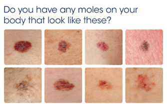

Stage 0 Stage 0 is also called Bowen's disease or carcinoma in situ. Carcinoma means there are cancer cells there. In situ means the cells are still in the place where they started to develop. So the cells have started to turn into cancer, but they have not yet spread or grown into surrounding areas of the skin. If it is not treated, Bowen's disease can develop into a squamous cell skin cancer. So your doctor may describe this stage as pre cancerous or pre malignant.
Stage 1 Stage 1 means the cancer is 2cm across or less and has 1 or no high risk features.High risk features mean the cancer Is more than 2mm thick Has grown into the lower dermis Has grown into the space around a nerve (perineural invasion) Started on the ear or lip Looks very abnormal under the microscope (the cells are poorly differentiated or undifferentiated)
Stage 2 Stage 2 means the cancer is more than 2cm across, or has 2 or more high risk features.
Stage 3 Stage 3 means the cancer Has grown into the bones in the face, such as the jaw bone or the bone around the eye, OR Has spread to a nearby lymph node (or lymph gland) on the same side of the body (and is less than 3cm)
Stage 4 Stage 4 means the cancer Has grown into the spine, ribs or lower part of the skull, OR Has spread to a lymph node that is more than 3cm OR to an internal organ, such as the lungs Staging can be quite complicated, so do talk to your doctor or clinical nurse specialist about what your stage of cancer is and what it means.